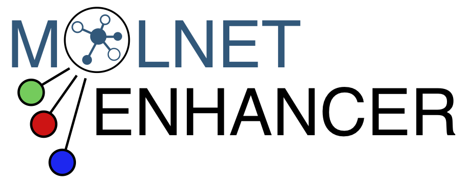
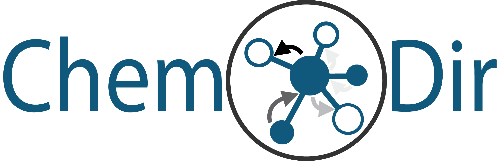

GNPS Logos
Feel free to use any of the following logos for your presentations. The following logos are licensed as CC BY.

GNPS Logo¶
PNG with white background

PNG with transparent background

PNG with URL
Animated
MASST Logo¶


Global Foodomics¶
ReDU Logo¶

MolNetEnhancer Logo¶

ChemDir Logo¶

GNPS Dashboard Logo¶

Food MASST¶

microbeMASST¶
GNPS FBMN¶

MassQL¶
Find the full documentation for MassQL here!

Logos for Zoom Background¶


Page Contributors¶
Last update:
January 11, 2024 22:06:02